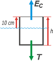

|
NO ME SALEN
(PROBLEMAS RESUELTOS DE BIOFÍSICA DEL CBC)
FLUIDOS
HIDROSTÁTICA
|
|

|
| |
| Adicional NMS 28* - Se tiene un cilindro vacío de 10 cm radio y masa despreciable, que flota en agua dejando fuera del nivel del
agua una altura de 10 cm cuando de él cuelga
externamente un bloque de hierro de peso 10 kg y
densidad 7,8 g/cm3 tal como lo muestra la figura (a).
Calcular la altura que quedará afuera del agua si el
bloque de hierro se introduce dentro del cilindro
como lo muestra la figura (b). |
|
 |
| |
(a) |
|
(b) |
|
|
|
|
| Acá un interesnte ejercicio de flotación. Veamos qué información podemos extraer de la situación (a). Vamos a tener que hacer dos DCL. Acá van: |
|
|
 |
Sobre el bloque de hierro actúan tres fuerzas: su porpio peso, P; la tensión que hace la cuerda de la que cuelga, T; y el empuje que el agua hace sobre el bloque, EB . Como las tres fuerzas están en equilibrio podemos escribir:
EB + T = P
A su vez el principio de Arquímedes asegura que el empuje es igual al peso específico del agua por el volumen de agua desalojado que no es otro que el volumen del bloque, VB.
EB = ρH2O . VB
|
|
|
|
A su vez, el volumen del bloque se puede calcular fácilmente porque nos dan el peso específico del hierro:
VB = PB / ρB
En lugar de reservar todos los cálculos para el final, los voy a ir haciendo de a poco para practicar pasajes de unidades y otras yerbas.
VB = 100 N / 78 N/lit
VB = 1,28 lit
Subimos un escalón: vamos a la ecuación de empuje:
EB = 10 N/lit . 1,28 lit
EB = 12,8 N
Y un escalón más...
T = P – EB
T = 100 N – 12,8 N
T = 87,2 N
Vamos al segundo diagrama en la situación (a). |
|
peso
específico del agua
ρH2O =
= 10 N/lit
= 10.000 N/m³ |
|  |
Sobre el cilindro actúan dos fuerzas: la tensión que hace la cuerda, T; y el empuje que el agua hace sobre el cilindro, EC . Como las dos fuerzas están en equilibrio podemos escribir:
EC = T
A su vez el principio de Arquímedes asegura que este empuje es igual al peso del agua desalojada, es decir, al específico del agua por el volumen de agua desalojado, que es la parte sumergida del cilindro en este caso (a), VCa.
EC = ρH2O . VCa
|
|
|
Donde el volumen sumergido es igual a la superficie de la base, A, por la profundidad sumergida, que a su vez es igual a la altura del cilindro, h menos la parte emergida, 0,1 m.
VCa = A . (h – 0,1 m)
Juntando estas tres ecuaciones, tenemos:
T = ρH2O . A . (h – 0,1 m)
De ahí despejamos h y lo calculamos (A = π r² = 3,14 0,01 m² = 0,0314 m²):
h = (T /ρH2O . A ) + 0,1 m
h = (87,2 N /10.000 N/m³ . 0,0314 m²) + 0,1 m
h = 0,377 m
Es momento de ir la la situación (b). |
|
peso
específico del agua
ρH2O =
= 10 N/lit
= 10.000 N/m³ |
 |
Sobre el cilindro actúan dos fuerzas: su peso (que es el peso del bloque que tiene adentro), P; y el empuje que el agua hace sobre el cilindro en esta situación final, EF . Como las dos fuerzas están en equilibrio podemos escribir:
P = EF
A su vez el principio de Arquímedes asegura que este empuje es igual al peso específico del agua por el volumen de agua desalojado, que es la parte sumergida del cilindro en este caso final (b), VCb.
EF = ρH2O . VCb
|
|
|
|
Donde el volumen sumergido es igual a la superficie de la base, A, por la profundidad sumergida, que a su vez es igual a la altura del cilindro, h menos la parte emergida, X.
VCb = A . (h – X)
Juntando estas tres ecuaciones, tenemos:
P = ρH2O . A . (h – X)
De ahí despejamos X y lo calculamos:
X = h – P / ρH2O . A
X = 0,377 m – 100 N / 314 N/m
|
|
|
|
|
|
Ya sabés cómo hacer para no hundirte en el bote si la bomba de achique no da abasto. |
|
|
| * Tomado y modificado de Física 3, de Hugo Medina Guzmán, Lima, PUCP, 2009. |
|
|
 |
| |
|
DESAFÍO: ¿Qué porción del cilindro quedaría afuera del agua si se retirara el bloque? |
|
| |
|
| Algunos derechos reservados.
Envenenamiento con una mezcla 30:70 de cianuro y estricnina a quien osare reproducir este material sin mencionar la fuente. Última actualización jun-13. Buenos Aires, Argentina. |
|
|
| | |
|
|